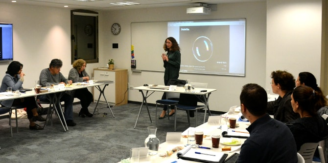
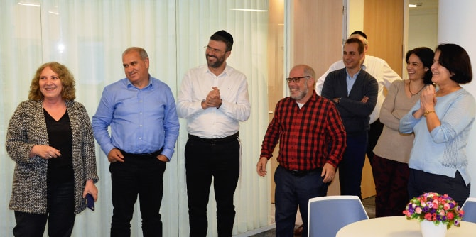

המפגש נפתח בהרצאתו של פרופ' שחר אייל, ראש התוכנית לתואר שני בפסיכולוגיה חברתית במרכז הבינתחומי הרצליה. פרופ' אייל, מומחה לאתיקה התנהגותית העוסק בפסיכולוגיה של קבלת החלטות, מתמקד בשנים האחרונות בחקר החלטות לא אתיות, שיפוט מוסרי וטכניקות יישומיות לצמצום רמאות ושחיתות. הרצאתו קבלת החלטות ואתיקה – הפסיכולוגיה של שורשי השחיתות עסקה בפער הקיים בין ערכיו ואמונותיו של אדם לבין התנהגותו בפועל וסקרה את המשתנים המשפיעים על עיצוב ההתנהגות: סביבה, נורמות קבוצתיות, קונפורמיזם, הצדקות ורציונליזציה, פיזור אחריות, אינטרסים סותרים ושליטה עצמית. פרופ' אייל הציג מחקרים מתחום הכלכלה ההתנהגותית אשר הראו כיצד התערבות מינורית בסביבה הניעה אנשים להתנהגות רצויה, חברתית ומוסרית יותר.
יגאל בר יוסף, אשר כיהן ומכהן בתפקידי מפתח בחברות מובילות בסקטור העסקי הישראלי, וכן כחבר דירקטוריון, תרם מהידע ומהניסיון העצומים שלו למשתתפים. בר יוסף סקר את חובות היסוד המוטלות על הדירקטור – חובת הזהירות וחובת האמונים – והבהיר את המשתמע מהן הלכה למעשה. הוא התמקד בחשיבותה של ועדת הביקורת, שתפקידה לבחון ולבקר את הליקויים בניהול העסקי של החברה, והדגיש את חובתם של חברי הדירקטוריון למקצועיות בלתי מתפשרת שתחילתה בלמידה יסודית של כל ההיבטים הרלוונטיים – המבנה הארגוני של החברה, נהליה וחוקיה, היכרות עם האנשים המשפיעים על ההחלטות וקריאת דוחות כספיים – וסופה בקבלת החלטות עניינית ועצמאית ובחובת דיווח.

הילה בר-הויזמן, רואת חשבון ושותפה בקבוצת ניהול הסיכונים Deloitte Israel, בעלת ניסיון רב בתחום הביקורת הפנימית, במיפוי ובהערכה של סיכונים בחברות מסחריות בינלאומיות ובגופים ציבורים וממשלתיים גדולים, הרצתה על ניהול סיכונים. לדבריה, עולם העסקים בנוי על נטילת סיכונים, אולם כאשר הם אינם מובנים או אינם מנוהלים באופן אחראי ומבוקר, הם עלולים לצאת משליטה ולהפוך לאיום שיחבל בהשגת היעדים. עיקר האחריות לניהולי סיכוני הארגון, לדברי בר-הויזמן, מוטלת על ההנהלה, אבל גם חברי הדירקטוריון הם חלק ממערך הבקרה בתהליך ניהול הסיכונים והם מהווים קו הגנה נוסף על החברה.
את הערב חתמה הרצאתה של סועאד דיאב, בוגרת מחזור י"ג בבית ספר מנדל למנהיגות חינוכית, חברי ועד מנהל בארגונים לטובת האוכלוסייה הערבית – בין מציאות לחזון. דיאב תיארה תמונת מצב של הוועדים המנהלים בקרב עמותות, ארגונים וחברות לתועלת הציבור בחברה הערבית, והציגה את הקשיים ואת האתגרים שיש לטפל בהם כדי לשפר ולקדם את תפקודם.
המפגש החמישי של התוכנית יתקיים ביום רביעי, 14.2.18, בתל-אביב.

{kind=link}
{kind=link}